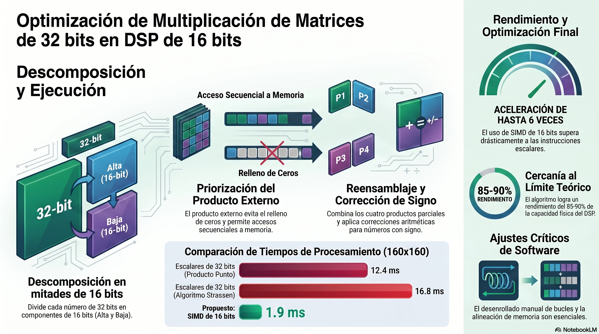

Tema 2 — Computación Paralela
La computación paralela es el pilar del rendimiento moderno. Esta sección abarca los fundamentos teóricos y prácticos del cómputo distribuido y concurrente, desde la planificación en múltiples núcleos hasta la resolución de problemas clásicos de sincronización e interbloqueos.
Contenido Teórico: Definición de ejecución física simultánea en múltiples núcleos y su impacto en el rendimiento de aplicaciones como la meteorología o la IA.
Objetivo del Simulador: Comparar la ejecución secuencial frente a la paralela para calcular la aceleración (Speedup).
Uso: Configurar diferentes ráfagas de CPU para observar cómo el tiempo final disminuye al distribuir la carga en 4 u 8 núcleos.
🤔 Preguntas de Reflexión
Contenido Teórico: Explicación del PCB (Process Control Block) y el TCB (Thread Control Block). Ventajas del aislamiento de fallos (si una pestaña/proceso colapsa, el sistema sigue operativo).
Objetivo del Simulador: Demostrar el aislamiento de memoria entre procesos y la compartición de recursos entre hilos.
Uso: Crear múltiples procesos para observar el consumo de recursos y simular fallos críticos para validar la resiliencia del sistema.
🤔 Preguntas de Reflexión
Contenido Teórico: Definición de operaciones atómicas (wait y signal) y la importancia de la sección crítica.
Objetivo del Simulador: Visualizar y prevenir las condiciones de carrera (Race Conditions) al acceder a recursos compartidos.
Uso: Lanzar hilos concurrentes hacia un recurso compartido (ej. saldo bancario) con y sin la protección del semáforo binario para observar la corrupción de datos.
🤔 Preguntas de Reflexión
Contenido Teórico: Conceptos de Hoare y Brinch Hansen sobre el uso de variables compartidas vinculadas a una condición lógica.
Objetivo del Simulador: Resolver el problema del Productor-Consumidor mediante condiciones de guarda.
Uso: Gestionar un buffer limitado donde los hilos deben esperar automáticamente si la condición (ej. count < N) no se cumple.
🤔 Preguntas de Reflexión
Contenido Teórico: Explicación de las condiciones de Coffman (espera circular, retención, no expropiación y exclusión mutua).
Objetivo del Simulador: Identificar y entender las causas de un bloqueo total del sistema mediante el Problema de los Filósofos.
Uso: Provocar un bloqueo circular donde cada hilo retiene un recurso y espera otro, deteniendo por completo el avance del software.
🤔 Preguntas de Reflexión
Material de apoyo, podcasts y diagramas visuales para profundizar en el cómputo paralelo.
📄 The Parallel Paradigm
Documento que explora los paradigmas de programación en paralelo, el diseño de arquitecturas concurrentes y los desafíos del rendimiento multicore.
Episodio Principal · Spotify
Explora cómo la concurrencia y el paralelismo han revolucionado la ingeniería de software y el hardware moderno.

📖 Bibliografía Técnica Recomendada